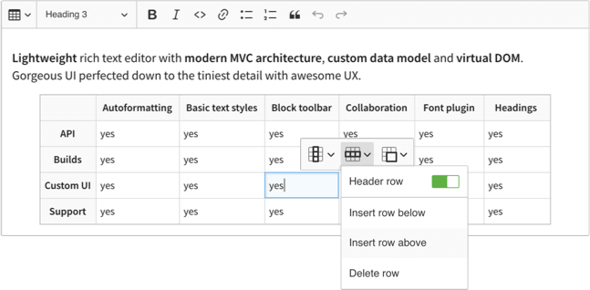

<!DOCTYPE html>
<html>
<head><meta name="generator" content="Hexo 3.9.0">
  <meta charset="utf-8">
  
  <meta http-equiv="X-UA-Compatible" content="IE=edge">
  <title>Ckeditor 5 简介 | 公孙二狗</title>
  <meta name="viewport" content="width=device-width, initial-scale=1, maximum-scale=1">
  <meta name="description" content="新版富文本编辑器 Ckeditor 5 比 Ckeditor 4 使用更简单, 下载 zip 包后只需要里面的 ckeditor.js (连样式文件都不需要), 像下面这样 3 步就可以了: 123456789101112131415161718&amp;lt;!DOCTYPE html&amp;gt;&amp;lt;html lang=&quot;en&quot; dir=&quot;ltr&quot;&amp;gt;&amp;lt;head&amp;gt;    &amp;lt;meta">
<meta name="keywords" content="FE,Vue">
<meta property="og:type" content="article">
<meta property="og:title" content="Ckeditor 5 简介">
<meta property="og:url" content="http://xtuer.github.io/fe-ckeditor-5/index.html">
<meta property="og:site_name" content="公孙二狗">
<meta property="og:description" content="新版富文本编辑器 Ckeditor 5 比 Ckeditor 4 使用更简单, 下载 zip 包后只需要里面的 ckeditor.js (连样式文件都不需要), 像下面这样 3 步就可以了: 123456789101112131415161718&amp;lt;!DOCTYPE html&amp;gt;&amp;lt;html lang=&quot;en&quot; dir=&quot;ltr&quot;&amp;gt;&amp;lt;head&amp;gt;    &amp;lt;meta">
<meta property="og:locale" content="default">
<meta property="og:image" content="http://xtuer.github.io/img/fe/ckeditor-5.png">
<meta property="og:updated_time" content="2020-07-07T14:16:50.285Z">
<meta name="twitter:card" content="summary">
<meta name="twitter:title" content="Ckeditor 5 简介">
<meta name="twitter:description" content="新版富文本编辑器 Ckeditor 5 比 Ckeditor 4 使用更简单, 下载 zip 包后只需要里面的 ckeditor.js (连样式文件都不需要), 像下面这样 3 步就可以了: 123456789101112131415161718&amp;lt;!DOCTYPE html&amp;gt;&amp;lt;html lang=&quot;en&quot; dir=&quot;ltr&quot;&amp;gt;&amp;lt;head&amp;gt;    &amp;lt;meta">
<meta name="twitter:image" content="http://xtuer.github.io/img/fe/ckeditor-5.png">
  
    <link rel="alternative" href="/atom.xml" title="公孙二狗" type="application/atom+xml">
  
  
    <link rel="icon" href="/img/dog.png">
  
  <link rel="stylesheet" href="/css/style.css">

  <!-- <link href="//cdn.bootcss.com/font-awesome/4.7.0/css/font-awesome.min.css" rel="stylesheet"> -->
  <!-- <script src="//cdn.bootcss.com/jquery/3.2.1/jquery.min.js"></script> -->
  <!-- <script src="//cdn.bootcss.com/require.js/2.3.6/require.min.js"></script> -->
  <link href="/css/fonts/font-awesome.min.css" rel="stylesheet">
  <script src="/js/jquery.min.js"></script>
  <script src="/js/require.min.js"></script>
  <script src="/js/main.js"></script>

  <!-- <script async src="//busuanzi.ibruce.info/busuanzi/2.3/busuanzi.pure.mini.js"></script> -->
  <!-- <script src="https://hm.baidu.com/hm.js?22778d8041aa1437b11529a3e87a0a12"></script> -->
</head>
</html>

<body>
    <div id="container">
        <div class="left-col">
            <div class="content-table">Content Table</div>
            <div class="overlay"></div>

<ul class="menu">
    <!-- <li class="item"><a href="javascript:void(0)" id="baidu-search-button">百度搜索</a></li> -->
    <!-- <li class="item"><a href="javascript:void(0)" id="google-search-button">谷歌搜索</a></li> -->
    <!-- <li class="item non-index-item"><a href="javascript:void(0)" id="show-toc-button">显示目录</a></li> -->
</ul>
<div class="intrude-less">
	<header id="header" class="inner">
		<a href="/" class="profilepic">
			
			
			
		</a>

		<hgroup>
		  <h1 class="header-author"><a href="/all/">公孙二狗</a></h1>
		</hgroup>
		<p style=" margin-bottom: 10px;margin-top: -5px;">
			<a style="color: gray;" href="http://wpa.qq.com/msgrd?v=3&uin=26664141&site=qq&menu=yes">QQ: 26664141</a>
		</p>

		
		<p class="header-subtitle">大圣，此去欲何？踏南天，碎凌霄。若一去不回……？便一去不回！</p>
		
		
			<div class="switch-btn">
				<div class="icon">
					<div class="icon-ctn">
						<div class="icon-wrap icon-ribbon" data-idx="1">
							<div class="ribbon"></div>
						</div>
						<div class="icon-wrap icon-house hide" data-idx="0">
							<div class="birdhouse"></div>
							<div class="birdhouse_holes"></div>
						</div>
						
						<div class="icon-wrap icon-link hide" data-idx="2">
							<div class="loopback_l"></div>
							<div class="loopback_r"></div>
						</div>
						
						
						<div class="icon-wrap icon-me hide" data-idx="3">
							<div class="user"></div>
							<div class="shoulder"></div>
						</div>
						
					</div>

				</div>
				<div class="tips-box hide">
					<div class="tips-arrow"></div>
					<ul class="tips-inner">
						<li>Tags</li>
						<li>Menu</li>
						
						<li>Links</li>
						
						
						<li>About</li>
						
					</ul>
				</div>
			</div>
		

		<div class="switch-area">
			<div class="switch-wrap">
				
				<section class="switch-part switch-part1">
					<div class="widget tagcloud" id="js-tagcloud">
						<a href="/tags/Ajax/" style="font-size: 10px;">Ajax</a> <a href="/tags/Cas/" style="font-size: 11.76px;">Cas</a> <a href="/tags/DB/" style="font-size: 14.12px;">DB</a> <a href="/tags/FE/" style="font-size: 20px;">FE</a> <a href="/tags/Gradle/" style="font-size: 13.53px;">Gradle</a> <a href="/tags/Hexo/" style="font-size: 11.76px;">Hexo</a> <a href="/tags/Index/" style="font-size: 12.94px;">Index</a> <a href="/tags/Java/" style="font-size: 19.41px;">Java</a> <a href="/tags/Mac/" style="font-size: 17.06px;">Mac</a> <a href="/tags/Misc/" style="font-size: 17.06px;">Misc</a> <a href="/tags/PHP/" style="font-size: 10.59px;">PHP</a> <a href="/tags/Qt/" style="font-size: 18.24px;">Qt</a> <a href="/tags/QtBook/" style="font-size: 18.82px;">QtBook</a> <a href="/tags/Redis/" style="font-size: 10.59px;">Redis</a> <a href="/tags/SemanticUi/" style="font-size: 13.53px;">SemanticUi</a> <a href="/tags/Spring/" style="font-size: 11.18px;">Spring</a> <a href="/tags/SpringBoot/" style="font-size: 12.35px;">SpringBoot</a> <a href="/tags/SpringCore/" style="font-size: 15.88px;">SpringCore</a> <a href="/tags/SpringMVC/" style="font-size: 14.71px;">SpringMVC</a> <a href="/tags/SpringSecurity/" style="font-size: 15.29px;">SpringSecurity</a> <a href="/tags/SpringWeb/" style="font-size: 17.65px;">SpringWeb</a> <a href="/tags/Util/" style="font-size: 17.65px;">Util</a> <a href="/tags/Vue/" style="font-size: 16.47px;">Vue</a> <a href="/tags/zTree/" style="font-size: 11.18px;">zTree</a>
                    </div>
                    <script>

                    </script>
				</section>
				

				<section class="switch-part switch-part2">
					<nav class="header-menu">
						<ul>
						
							<li><a href="/">主页</a></li>
				        
							<li><a href="/archives">所有文章</a></li>
				        
						</ul>
					</nav>
					<nav class="header-nav">
						<div class="social">
							
						</div>
					</nav>
				</section>

				
				<section class="switch-part switch-part3">
					<div id="js-friends">
					
			          <a target="_blank" class="main-nav-link switch-friends-link" href="https://loadship.cn">小鱼人</a>
			        
			          <a target="_blank" class="main-nav-link switch-friends-link" href="http://qtnull.com/">千古</a>
			        
			        </div>
				</section>
				

				
				
				<section class="switch-part switch-part4">
				
					<div id="js-aboutme">吞风吻雨葬落日未曾彷徨，欺山赶海践雪径也未绝望，拈花把酒偏折煞世人情狂，凭这两眼与百臂或千手不能防，天阔阔雪漫漫共谁同航，这沙滚滚水皱皱笑着浪荡，贪欢一晌偏教那女儿情长埋葬。</div>
				</section>
				
			</div>
		</div>
        <div class="links-area" style="margin-top: 10px;">
            <a href="/html/tools">收藏夹 |</a>
            <a href="/qtbook">Qt 杂谈 |</a>
            <a href="/html/vue-in-action">Vue 实践</a>
            <a href="/html/spring-boot">Spring Boot |</a>
            <a href="/spring-web-index">Java Web 开发</a>
        </div>
	</header>
</div>

<script>
    $(document).ready(function() {
        // Baidu 搜索
        // $('#baidu-search-button').click(function(event) {
        //     layer.prompt({title: false, formType: 0, closeBtn: 0, maxlength: 140}, function(text, index) {
        //         layer.close(index);
        //         window.open('https://www.baidu.com/s?wd=site:qtdebug.com+'+text);
        //     });
        // });
        //
        // // Google 搜索
        // $('#google-search-button').click(function(event) {
        //     layer.prompt({title: false, formType: 0, closeBtn: 0, maxlength: 140}, function(text, index) {
        //         layer.close(index);
        //         window.open('https://www.google.com/?#q=site:qtdebug.com+'+text);
        //     });
        // });
    });

    function resetTags() {
		var tags = $(".tagcloud a");
		tags.css({"font-size": "12px"});
		for(var i=0,len=tags.length; i<len; i++){
			var num = tags.eq(i).html().length % 5 +1;
			tags[i].className = "";
			tags.eq(i).addClass("color"+num);
		}
    }

    resetTags();
</script>

        </div>
        <div class="mid-col">
            <nav id="mobile-nav">
  	<div class="overlay">
  		<div class="slider-trigger"></div>
  		<h1 class="header-author js-mobile-header hide">公孙二狗</h1>
  	</div>
	<div class="intrude-less">
		<header id="header" class="inner">
			<div class="profilepic">
			
				
			
			</div>
			<hgroup>
			  <h1 class="header-author">公孙二狗</h1>
			</hgroup>
			
			<p class="header-subtitle">大圣，此去欲何？踏南天，碎凌霄。若一去不回……？便一去不回！</p>
			
			<nav class="header-menu">
				<ul>
				
					<li><a href="/">主页</a></li>
		        
					<li><a href="/archives">所有文章</a></li>
		        
		        <div class="clearfix"></div>
				</ul>
			</nav>
			<nav class="header-nav">
				<div class="social">
					
				</div>
			</nav>
		</header>				
	</div>
</nav>

            <div class="body-wrap"><!-- 生成目录 -->

    <div id="toc-mask" style="display: none;">
        <div class="toc-container">
            <div class="article-toc">
                <ol class="toc"><li class="toc-item toc-level-2"><a class="toc-link" href="#集成多种编辑模式"><span class="toc-text">集成多种编辑模式</span></a></li><li class="toc-item toc-level-2"><a class="toc-link" href="#编译为中文版本"><span class="toc-text">编译为中文版本</span></a></li><li class="toc-item toc-level-2"><a class="toc-link" href="#使用非默认自带插件"><span class="toc-text">使用非默认自带插件</span></a></li><li class="toc-item toc-level-2"><a class="toc-link" href="#写一个最简单的插件"><span class="toc-text">写一个最简单的插件</span></a></li></ol>
            </div>
        </div>
    </div>


<article id="post-fe-ckeditor-5" class="article article-type-post" itemscope itemprop="blogPost">
    <!-- 
        <div class="content-table">Content Table</div>
     -->

    
        <div class="article-meta">
            <a href="/fe-ckeditor-5/" class="article-date">
  	<!-- <time datetime="2018-12-26T07:18:39.000Z" itemprop="datePublished">2018-12-26</time> -->
    2018-12-26
</a>

        </div>
    

    
        <div class="article-inner article-inner-x">
    
    
    
      <header class="article-header">
        
  
    <h1 class="article-title" itemprop="name">
      Ckeditor 5 简介
    </h1>
  

      </header>
      
      <div class="article-info article-info-post">
        
	<div class="article-tag tagcloud">
		<ul class="article-tag-list"><li class="article-tag-list-item"><a class="article-tag-list-link" href="/tags/FE/">FE</a></li><li class="article-tag-list-item"><a class="article-tag-list-link" href="/tags/Vue/">Vue</a></li></ul>
	</div>


        

        <div class="clearfix"></div>
      </div>
      
    
    <div class="article-entry" itemprop="articleBody">
        
            <p>新版富文本编辑器 <a href="https://ckeditor.com" target="_blank" rel="noopener">Ckeditor 5</a> 比 Ckeditor 4 使用更简单, <a href="https://ckeditor.com/ckeditor-5/download/" target="_blank" rel="noopener">下载</a> zip 包后只需要里面的 <code>ckeditor.js</code> (连样式文件都不需要), 像下面这样 3 步就可以了:</p>
<figure class="highlight html"><table><tr><td class="gutter"><pre><span class="line">1</span><br><span class="line">2</span><br><span class="line">3</span><br><span class="line">4</span><br><span class="line">5</span><br><span class="line">6</span><br><span class="line">7</span><br><span class="line">8</span><br><span class="line">9</span><br><span class="line">10</span><br><span class="line">11</span><br><span class="line">12</span><br><span class="line">13</span><br><span class="line">14</span><br><span class="line">15</span><br><span class="line">16</span><br><span class="line">17</span><br><span class="line">18</span><br></pre></td><td class="code"><pre><span class="line"><span class="meta">&lt;!DOCTYPE <span class="meta-keyword">html</span>&gt;</span></span><br><span class="line"><span class="tag">&lt;<span class="name">html</span> <span class="attr">lang</span>=<span class="string">"en"</span> <span class="attr">dir</span>=<span class="string">"ltr"</span>&gt;</span></span><br><span class="line"></span><br><span class="line"><span class="tag">&lt;<span class="name">head</span>&gt;</span></span><br><span class="line">    <span class="tag">&lt;<span class="name">meta</span> <span class="attr">charset</span>=<span class="string">"utf-8"</span>&gt;</span></span><br><span class="line">    <span class="tag">&lt;<span class="name">title</span>&gt;</span>Ckeditor Demo<span class="tag">&lt;/<span class="name">title</span>&gt;</span></span><br><span class="line"><span class="tag">&lt;/<span class="name">head</span>&gt;</span></span><br><span class="line"></span><br><span class="line"><span class="tag">&lt;<span class="name">body</span>&gt;</span></span><br><span class="line">    <span class="tag">&lt;<span class="name">div</span> <span class="attr">id</span>=<span class="string">"editor"</span>&gt;</span><span class="tag">&lt;/<span class="name">div</span>&gt;</span> <span class="comment">&lt;!-- [1] --&gt;</span></span><br><span class="line"></span><br><span class="line">    <span class="tag">&lt;<span class="name">script</span> <span class="attr">src</span>=<span class="string">"ckeditor.js"</span>&gt;</span><span class="tag">&lt;/<span class="name">script</span>&gt;</span> <span class="comment">&lt;!-- [2] --&gt;</span></span><br><span class="line">    <span class="tag">&lt;<span class="name">script</span>&gt;</span></span><br><span class="line"><span class="javascript">        ClassicEditor.create(<span class="built_in">document</span>.querySelector(<span class="string">'#editor'</span>)); <span class="comment">// [3]</span></span></span><br><span class="line">    <span class="tag">&lt;/<span class="name">script</span>&gt;</span></span><br><span class="line"><span class="tag">&lt;/<span class="name">body</span>&gt;</span></span><br><span class="line"></span><br><span class="line"><span class="tag">&lt;/<span class="name">html</span>&gt;</span></span><br></pre></td></tr></table></figure>
<p></p>
<p>只是简单的使用, 默认的功能就可以了. 如果还需要更多的功能, 例如集成多种编辑模式, 使用非默认自带插件, 自定义插件等就不能使用直接下载的代码 (You can’t add a plugin to an existing build), 需要我们自己编译源码才行, 下面就一一进行介绍. <a id="more"></a></p>
<h2 id="集成多种编辑模式"><a href="#集成多种编辑模式" class="headerlink" title="集成多种编辑模式"></a>集成多种编辑模式</h2><p>Ckeditor 5 提供了 4 种编辑模式: <a href="https://ckeditor.com/docs/ckeditor5/latest/examples/builds/classic-editor.html" target="_blank" rel="noopener">Classic</a>, <a href="https://ckeditor.com/docs/ckeditor5/latest/examples/builds/inline-editor.html" target="_blank" rel="noopener">Inline</a>, <a href="https://ckeditor.com/docs/ckeditor5/latest/examples/builds/balloon-editor.html" target="_blank" rel="noopener">Balloon</a>, <a href="https://ckeditor.com/docs/ckeditor5/latest/examples/builds/document-editor.html" target="_blank" rel="noopener">Document</a> (点击打开就能看到具体的样子了), <a href="https://ckeditor.com/ckeditor-5/download/" target="_blank" rel="noopener">下载</a>的代码只能选择其中某一种模式, 例如 Classic, 在我们的项目里, 希望在不同的页面根据场景选择使用 Classic, Inline, Balloon 的编辑模式, 默认下载的代码满足不了, 下面使用源码把几种模式全编译集成在一起, 有兴趣的同学也可以直接看官方文档 <a href="https://ckeditor.com/docs/ckeditor5/latest/builds/guides/integration/advanced-setup.html" target="_blank" rel="noopener">Advanced Setup</a> (最终编译出来的 ckeditor.js 也就比单独一个模式的大几 KB, 相对于本来就有 500 多 KB 的 ckeditor.js 来说可以忽略不计, 不知道为啥就不直接合在一起):</p>
<ol>
<li><p>下载源码:</p>
<ol>
<li><code>git clone git@github.com:ckeditor/ckeditor5-build-classic.git</code></li>
<li><code>cd ckeditor5-build-classic</code></li>
<li><code>npm install --save-dev @ckeditor/ckeditor5-editor-inline</code></li>
<li><code>npm install --save-dev @ckeditor/ckeditor5-editor-balloon</code></li>
<li><code>npm install</code></li>
</ol>
</li>
<li><p>修改配置:</p>
<ol>
<li><p>修改 <code>src/ckeditor.js</code> (注意注释中 <code>[1][2][3][4]</code> 部分), 参考默认的 ClassicEditor, 为每种编辑器设置 plugins 和 config:</p>
<figure class="highlight js"><table><tr><td class="gutter"><pre><span class="line">1</span><br><span class="line">2</span><br><span class="line">3</span><br><span class="line">4</span><br><span class="line">5</span><br><span class="line">6</span><br><span class="line">7</span><br><span class="line">8</span><br><span class="line">9</span><br><span class="line">10</span><br><span class="line">11</span><br><span class="line">12</span><br><span class="line">13</span><br><span class="line">14</span><br><span class="line">15</span><br><span class="line">16</span><br><span class="line">17</span><br><span class="line">18</span><br><span class="line">19</span><br><span class="line">20</span><br><span class="line">21</span><br><span class="line">22</span><br><span class="line">23</span><br><span class="line">24</span><br><span class="line">25</span><br><span class="line">26</span><br><span class="line">27</span><br><span class="line">28</span><br><span class="line">29</span><br><span class="line">30</span><br><span class="line">31</span><br><span class="line">32</span><br><span class="line">33</span><br><span class="line">34</span><br><span class="line">35</span><br><span class="line">36</span><br><span class="line">37</span><br><span class="line">38</span><br><span class="line">39</span><br><span class="line">40</span><br><span class="line">41</span><br><span class="line">42</span><br><span class="line">43</span><br><span class="line">44</span><br><span class="line">45</span><br><span class="line">46</span><br><span class="line">47</span><br><span class="line">48</span><br><span class="line">49</span><br><span class="line">50</span><br><span class="line">51</span><br><span class="line">52</span><br><span class="line">53</span><br><span class="line">54</span><br><span class="line">55</span><br><span class="line">56</span><br><span class="line">57</span><br><span class="line">58</span><br><span class="line">59</span><br><span class="line">60</span><br><span class="line">61</span><br><span class="line">62</span><br><span class="line">63</span><br><span class="line">64</span><br><span class="line">65</span><br><span class="line">66</span><br><span class="line">67</span><br><span class="line">68</span><br><span class="line">69</span><br><span class="line">70</span><br><span class="line">71</span><br><span class="line">72</span><br><span class="line">73</span><br><span class="line">74</span><br><span class="line">75</span><br><span class="line">76</span><br><span class="line">77</span><br><span class="line">78</span><br><span class="line">79</span><br><span class="line">80</span><br><span class="line">81</span><br><span class="line">82</span><br><span class="line">83</span><br><span class="line">84</span><br><span class="line">85</span><br><span class="line">86</span><br><span class="line">87</span><br><span class="line">88</span><br><span class="line">89</span><br><span class="line">90</span><br><span class="line">91</span><br><span class="line">92</span><br><span class="line">93</span><br><span class="line">94</span><br><span class="line">95</span><br><span class="line">96</span><br><span class="line">97</span><br><span class="line">98</span><br><span class="line">99</span><br><span class="line">100</span><br><span class="line">101</span><br><span class="line">102</span><br><span class="line">103</span><br><span class="line">104</span><br><span class="line">105</span><br><span class="line">106</span><br><span class="line">107</span><br><span class="line">108</span><br><span class="line">109</span><br><span class="line">110</span><br><span class="line">111</span><br><span class="line">112</span><br></pre></td><td class="code"><pre><span class="line"><span class="comment">/**</span></span><br><span class="line"><span class="comment"> * <span class="doctag">@license </span>Copyright (c) 2003-2018, CKSource - Frederico Knabben. All rights reserved.</span></span><br><span class="line"><span class="comment"> * For licensing, see LICENSE.md.</span></span><br><span class="line"><span class="comment"> */</span></span><br><span class="line"></span><br><span class="line"><span class="comment">// [1] The editor creator to use.</span></span><br><span class="line"><span class="keyword">import</span> ClassicEditorBase <span class="keyword">from</span> <span class="string">'@ckeditor/ckeditor5-editor-classic/src/classiceditor'</span>;</span><br><span class="line"><span class="keyword">import</span> InlineEditorBase <span class="keyword">from</span> <span class="string">'@ckeditor/ckeditor5-editor-inline/src/inlineeditor'</span>;</span><br><span class="line"><span class="keyword">import</span> BalloonEditorBase <span class="keyword">from</span> <span class="string">'@ckeditor/ckeditor5-editor-balloon/src/ballooneditor'</span>;</span><br><span class="line"></span><br><span class="line"><span class="keyword">import</span> Essentials <span class="keyword">from</span> <span class="string">'@ckeditor/ckeditor5-essentials/src/essentials'</span>;</span><br><span class="line"><span class="keyword">import</span> UploadAdapter <span class="keyword">from</span> <span class="string">'@ckeditor/ckeditor5-adapter-ckfinder/src/uploadadapter'</span>;</span><br><span class="line"><span class="keyword">import</span> Autoformat <span class="keyword">from</span> <span class="string">'@ckeditor/ckeditor5-autoformat/src/autoformat'</span>;</span><br><span class="line"><span class="keyword">import</span> Bold <span class="keyword">from</span> <span class="string">'@ckeditor/ckeditor5-basic-styles/src/bold'</span>;</span><br><span class="line"><span class="keyword">import</span> Italic <span class="keyword">from</span> <span class="string">'@ckeditor/ckeditor5-basic-styles/src/italic'</span>;</span><br><span class="line"><span class="keyword">import</span> BlockQuote <span class="keyword">from</span> <span class="string">'@ckeditor/ckeditor5-block-quote/src/blockquote'</span>;</span><br><span class="line"><span class="keyword">import</span> CKFinder <span class="keyword">from</span> <span class="string">'@ckeditor/ckeditor5-ckfinder/src/ckfinder'</span>;</span><br><span class="line"><span class="keyword">import</span> EasyImage <span class="keyword">from</span> <span class="string">'@ckeditor/ckeditor5-easy-image/src/easyimage'</span>;</span><br><span class="line"><span class="keyword">import</span> Heading <span class="keyword">from</span> <span class="string">'@ckeditor/ckeditor5-heading/src/heading'</span>;</span><br><span class="line"><span class="keyword">import</span> Image <span class="keyword">from</span> <span class="string">'@ckeditor/ckeditor5-image/src/image'</span>;</span><br><span class="line"><span class="keyword">import</span> ImageCaption <span class="keyword">from</span> <span class="string">'@ckeditor/ckeditor5-image/src/imagecaption'</span>;</span><br><span class="line"><span class="keyword">import</span> ImageStyle <span class="keyword">from</span> <span class="string">'@ckeditor/ckeditor5-image/src/imagestyle'</span>;</span><br><span class="line"><span class="keyword">import</span> ImageToolbar <span class="keyword">from</span> <span class="string">'@ckeditor/ckeditor5-image/src/imagetoolbar'</span>;</span><br><span class="line"><span class="keyword">import</span> ImageUpload <span class="keyword">from</span> <span class="string">'@ckeditor/ckeditor5-image/src/imageupload'</span>;</span><br><span class="line"><span class="keyword">import</span> Link <span class="keyword">from</span> <span class="string">'@ckeditor/ckeditor5-link/src/link'</span>;</span><br><span class="line"><span class="keyword">import</span> List <span class="keyword">from</span> <span class="string">'@ckeditor/ckeditor5-list/src/list'</span>;</span><br><span class="line"><span class="keyword">import</span> MediaEmbed <span class="keyword">from</span> <span class="string">'@ckeditor/ckeditor5-media-embed/src/mediaembed'</span>;</span><br><span class="line"><span class="keyword">import</span> Paragraph <span class="keyword">from</span> <span class="string">'@ckeditor/ckeditor5-paragraph/src/paragraph'</span>;</span><br><span class="line"><span class="keyword">import</span> PasteFromOffice <span class="keyword">from</span> <span class="string">'@ckeditor/ckeditor5-paste-from-office/src/pastefromoffice'</span>;</span><br><span class="line"><span class="keyword">import</span> Table <span class="keyword">from</span> <span class="string">'@ckeditor/ckeditor5-table/src/table'</span>;</span><br><span class="line"><span class="keyword">import</span> TableToolbar <span class="keyword">from</span> <span class="string">'@ckeditor/ckeditor5-table/src/tabletoolbar'</span>;</span><br><span class="line"></span><br><span class="line"><span class="comment">// [2]</span></span><br><span class="line"><span class="class"><span class="keyword">class</span> <span class="title">ClassicEditor</span> <span class="keyword">extends</span> <span class="title">ClassicEditorBase</span> </span>&#123;&#125;</span><br><span class="line"><span class="class"><span class="keyword">class</span> <span class="title">InlineEditor</span>  <span class="keyword">extends</span> <span class="title">InlineEditorBase</span> </span>&#123;&#125;</span><br><span class="line"><span class="class"><span class="keyword">class</span> <span class="title">BalloonEditor</span> <span class="keyword">extends</span> <span class="title">BalloonEditorBase</span> </span>&#123;&#125;</span><br><span class="line"></span><br><span class="line"><span class="comment">// Plugins to include in the build.</span></span><br><span class="line"><span class="keyword">const</span> builtinPlugins = [</span><br><span class="line">	Essentials,</span><br><span class="line">	UploadAdapter,</span><br><span class="line">	Autoformat,</span><br><span class="line">	Bold,</span><br><span class="line">	Italic,</span><br><span class="line">	BlockQuote,</span><br><span class="line">	CKFinder,</span><br><span class="line">	EasyImage,</span><br><span class="line">	Heading,</span><br><span class="line">	Image,</span><br><span class="line">	ImageCaption,</span><br><span class="line">	ImageStyle,</span><br><span class="line">	ImageToolbar,</span><br><span class="line">	ImageUpload,</span><br><span class="line">	Link,</span><br><span class="line">	List,</span><br><span class="line">	MediaEmbed,</span><br><span class="line">	Paragraph,</span><br><span class="line">	PasteFromOffice,</span><br><span class="line">	Table,</span><br><span class="line">	TableToolbar,</span><br><span class="line">];</span><br><span class="line"></span><br><span class="line"><span class="comment">// Editor configuration.</span></span><br><span class="line"><span class="keyword">const</span> defaultConfig = &#123;</span><br><span class="line">	toolbar: &#123;</span><br><span class="line">		items: [</span><br><span class="line">			<span class="string">'heading'</span>,</span><br><span class="line">			<span class="string">'|'</span>,</span><br><span class="line">			<span class="string">'bold'</span>,</span><br><span class="line">			<span class="string">'italic'</span>,</span><br><span class="line">			<span class="string">'link'</span>,</span><br><span class="line">			<span class="string">'bulletedList'</span>,</span><br><span class="line">			<span class="string">'numberedList'</span>,</span><br><span class="line">			<span class="string">'imageUpload'</span>,</span><br><span class="line">			<span class="string">'blockQuote'</span>,</span><br><span class="line">			<span class="string">'insertTable'</span>,</span><br><span class="line">			<span class="string">'mediaEmbed'</span>,</span><br><span class="line">			<span class="string">'undo'</span>,</span><br><span class="line">			<span class="string">'redo'</span></span><br><span class="line">		]</span><br><span class="line">	&#125;,</span><br><span class="line">	image: &#123;</span><br><span class="line">		toolbar: [</span><br><span class="line">			<span class="string">'imageStyle:full'</span>,</span><br><span class="line">			<span class="string">'imageStyle:side'</span>,</span><br><span class="line">			<span class="string">'|'</span>,</span><br><span class="line">			<span class="string">'imageTextAlternative'</span></span><br><span class="line">		]</span><br><span class="line">	&#125;,</span><br><span class="line">	table: &#123;</span><br><span class="line">		contentToolbar: [</span><br><span class="line">			<span class="string">'tableColumn'</span>,</span><br><span class="line">			<span class="string">'tableRow'</span>,</span><br><span class="line">			<span class="string">'mergeTableCells'</span></span><br><span class="line">		]</span><br><span class="line">	&#125;,</span><br><span class="line">	<span class="comment">// This value must be kept in sync with the language defined in webpack.config.js.</span></span><br><span class="line">	language: <span class="string">'en'</span></span><br><span class="line">&#125;;</span><br><span class="line"></span><br><span class="line"><span class="comment">// [3]</span></span><br><span class="line">ClassicEditor.builtinPlugins = builtinPlugins;</span><br><span class="line">InlineEditor.builtinPlugins  = builtinPlugins;</span><br><span class="line">BalloonEditor.builtinPlugins = builtinPlugins;</span><br><span class="line">ClassicEditor.defaultConfig  = defaultConfig;</span><br><span class="line">InlineEditor.defaultConfig   = defaultConfig;</span><br><span class="line">BalloonEditor.defaultConfig  = defaultConfig;</span><br><span class="line"></span><br><span class="line"><span class="comment">// [4]</span></span><br><span class="line"><span class="keyword">export</span> <span class="keyword">default</span> &#123;</span><br><span class="line">    ClassicEditor, InlineEditor, BalloonEditor</span><br><span class="line">&#125;;</span><br></pre></td></tr></table></figure>
</li>
<li><p>修改 <code>webpack.config.js</code> (library 的值修改为 <code>CKEDITOR</code>):</p>
<figure class="highlight js"><table><tr><td class="gutter"><pre><span class="line">1</span><br><span class="line">2</span><br><span class="line">3</span><br><span class="line">4</span><br></pre></td><td class="code"><pre><span class="line">output: &#123;</span><br><span class="line">    <span class="comment">// The name under which the editor will be exported.</span></span><br><span class="line">    <span class="comment">// library: 'ClassicEditor',</span></span><br><span class="line">    library: <span class="string">'CKEDITOR'</span>,</span><br></pre></td></tr></table></figure>
</li>
</ol>
</li>
<li><p>开始编译: <code>npm run build</code></p>
</li>
<li><p>复制 <code>build/ckeditor.js</code> 到项目里</p>
</li>
<li><p>创建编辑器:</p>
<figure class="highlight js"><table><tr><td class="gutter"><pre><span class="line">1</span><br><span class="line">2</span><br><span class="line">3</span><br></pre></td><td class="code"><pre><span class="line">CKEDITOR.InlineEditor.create(<span class="built_in">document</span>.querySelector(<span class="string">'#editor'</span>));</span><br><span class="line">CKEDITOR.BalloonEditor.create(<span class="built_in">document</span>.querySelector(<span class="string">'#editor'</span>));</span><br><span class="line">CKEDITOR.ClassicEditor.create(<span class="built_in">document</span>.querySelector(<span class="string">'#editor'</span>));</span><br></pre></td></tr></table></figure>
</li>
</ol>
<h2 id="编译为中文版本"><a href="#编译为中文版本" class="headerlink" title="编译为中文版本"></a>编译为中文版本</h2><p>编译为中文版本后就不需要引入 <code>translations/zh-ch.js</code> 了:</p>
<ol>
<li><p>修改 <code>src/ckeditor.js</code> 中的 language 为 <code>zh-cn</code>:</p>
<figure class="highlight js"><table><tr><td class="gutter"><pre><span class="line">1</span><br><span class="line">2</span><br><span class="line">3</span><br><span class="line">4</span><br></pre></td><td class="code"><pre><span class="line"><span class="keyword">const</span> defaultConfig = &#123;</span><br><span class="line">    ...</span><br><span class="line">    language: <span class="string">'zh-cn'</span></span><br><span class="line">&#125;</span><br></pre></td></tr></table></figure>
</li>
<li><p>修改 <code>webpack.config.js</code> 中的 language 为 <code>zh-cn</code>:</p>
<figure class="highlight js"><table><tr><td class="gutter"><pre><span class="line">1</span><br><span class="line">2</span><br><span class="line">3</span><br><span class="line">4</span><br><span class="line">5</span><br><span class="line">6</span><br><span class="line">7</span><br></pre></td><td class="code"><pre><span class="line">plugins: [</span><br><span class="line">    <span class="keyword">new</span> CKEditorWebpackPlugin( &#123;</span><br><span class="line">        <span class="comment">// UI language. Language codes follow the https://en.wikipedia.org/wiki/ISO_639-1 format.</span></span><br><span class="line">        <span class="comment">// When changing the built-in language, remember to also change it in the editor's configuration (src/ckeditor.js).</span></span><br><span class="line">        language: <span class="string">'zh-cn'</span>,</span><br><span class="line">    &#125;</span><br><span class="line">]</span><br></pre></td></tr></table></figure>
</li>
<li><p>开始编译: <code>npm run build</code></p>
</li>
</ol>
<h2 id="使用非默认自带插件"><a href="#使用非默认自带插件" class="headerlink" title="使用非默认自带插件"></a>使用非默认自带插件</h2><p>以使用插件 Autosave 为例, 监听文本变化时在控制台输出编辑器的文本.</p>
<ol>
<li><p><code>cd ckeditor5-build-classic</code></p>
</li>
<li><p><code>npm install --save @ckeditor/ckeditor5-autosave</code></p>
</li>
<li><p>修改 <code>src/ckeditor.js</code></p>
<figure class="highlight js"><table><tr><td class="gutter"><pre><span class="line">1</span><br><span class="line">2</span><br><span class="line">3</span><br><span class="line">4</span><br><span class="line">5</span><br><span class="line">6</span><br></pre></td><td class="code"><pre><span class="line"><span class="keyword">import</span> Autosave <span class="keyword">from</span> <span class="string">'@ckeditor/ckeditor5-autosave/src/autosave'</span>;</span><br><span class="line"></span><br><span class="line"><span class="keyword">const</span> builtinPlugins = [</span><br><span class="line">    ...</span><br><span class="line">    Autosave,</span><br><span class="line">]</span><br></pre></td></tr></table></figure>
</li>
<li><p><code>npm run build</code></p>
</li>
<li><p>复制 <code>build/ckeditor.js</code> 到项目里</p>
</li>
<li><p>监听编辑器的文本变化</p>
<figure class="highlight js"><table><tr><td class="gutter"><pre><span class="line">1</span><br><span class="line">2</span><br><span class="line">3</span><br><span class="line">4</span><br><span class="line">5</span><br><span class="line">6</span><br><span class="line">7</span><br><span class="line">8</span><br><span class="line">9</span><br><span class="line">10</span><br><span class="line">11</span><br></pre></td><td class="code"><pre><span class="line">CKEDITOR.ClassicEditor.create(<span class="built_in">document</span>.querySelector(<span class="string">'#editor'</span>), &#123;</span><br><span class="line">    autosave: &#123;</span><br><span class="line">        waitingTime: <span class="number">340</span>, <span class="comment">// 停止输入动作后触发 save 操作的时间, 默认为 1 秒</span></span><br><span class="line">        save(editor) &#123;    <span class="comment">// 文本变化时的回调函数</span></span><br><span class="line">            <span class="keyword">return</span> <span class="keyword">new</span> <span class="built_in">Promise</span>(<span class="function"><span class="params">resolve</span> =&gt;</span> &#123;</span><br><span class="line">                <span class="built_in">console</span>.log(editor.getData());</span><br><span class="line">                resolve();</span><br><span class="line">            &#125;);</span><br><span class="line">        &#125;</span><br><span class="line">    &#125;</span><br><span class="line">&#125;);</span><br></pre></td></tr></table></figure>
</li>
</ol>
<p>执行命令  <code>editor.execute(&#39;bold&#39;)</code>: 对当前选区执行 bold 命令.</p>
<h2 id="写一个最简单的插件"><a href="#写一个最简单的插件" class="headerlink" title="写一个最简单的插件"></a>写一个最简单的插件</h2><p>这里我们来写一个简单的插件 XButton, 在工具栏上增加一个按钮, 点击后在控制台输出一点东西, 需要注意几点:</p>
<ul>
<li>插件的名字</li>
<li>创建按钮</li>
<li>插件的按钮在工具栏额名字</li>
<li>按钮的图标</li>
<li>点击按钮执行的函数</li>
</ul>
<p>由于目前还没找到官方开发插件的环境怎么搭建, 我们就用最笨, 效率最低的办法来实现吧:</p>
<ol>
<li><p><code>git clone git@github.com:ckeditor/ckeditor5-build-classic.git</code></p>
</li>
<li><p><code>cd ckeditor5-build-classic</code></p>
</li>
<li><p>在 src 目录下创建目录 xbutton, 在 xbutton 中准备下面 3 个文件:</p>
<ul>
<li><code>xbutton/XButton.js</code></li>
<li><code>xbutton/XButtonUi.js</code></li>
<li><code>bold.svg</code>: 从 ckeditor 的源码中复制的</li>
</ul>
</li>
<li><p>XButton.js 为插件入口文件:</p>
<figure class="highlight js"><table><tr><td class="gutter"><pre><span class="line">1</span><br><span class="line">2</span><br><span class="line">3</span><br><span class="line">4</span><br><span class="line">5</span><br><span class="line">6</span><br><span class="line">7</span><br><span class="line">8</span><br><span class="line">9</span><br><span class="line">10</span><br><span class="line">11</span><br><span class="line">12</span><br><span class="line">13</span><br><span class="line">14</span><br><span class="line">15</span><br><span class="line">16</span><br><span class="line">17</span><br><span class="line">18</span><br></pre></td><td class="code"><pre><span class="line"><span class="keyword">import</span> Plugin <span class="keyword">from</span> <span class="string">'@ckeditor/ckeditor5-core/src/plugin'</span>;</span><br><span class="line"><span class="keyword">import</span> XButtonUi <span class="keyword">from</span> <span class="string">'./XButtonUi'</span>;</span><br><span class="line"></span><br><span class="line"><span class="keyword">export</span> <span class="keyword">default</span> <span class="class"><span class="keyword">class</span> <span class="title">XButton</span> <span class="keyword">extends</span> <span class="title">Plugin</span> </span>&#123;</span><br><span class="line">    <span class="comment">/**</span></span><br><span class="line"><span class="comment">     * <span class="doctag">@inheritDoc</span></span></span><br><span class="line"><span class="comment">     */</span></span><br><span class="line">	<span class="keyword">static</span> <span class="keyword">get</span> requires() &#123;</span><br><span class="line">		<span class="keyword">return</span> [XButtonUi]; <span class="comment">// [1] 插件的其他实现文件</span></span><br><span class="line">	&#125;</span><br><span class="line"></span><br><span class="line">    <span class="comment">/**</span></span><br><span class="line"><span class="comment">     * <span class="doctag">@inheritDoc</span></span></span><br><span class="line"><span class="comment">     */</span></span><br><span class="line">	<span class="keyword">static</span> <span class="keyword">get</span> pluginName() &#123;</span><br><span class="line">		<span class="keyword">return</span> <span class="string">'XButton'</span>; <span class="comment">// [2] 插件的名字</span></span><br><span class="line">	&#125;</span><br><span class="line">&#125;</span><br></pre></td></tr></table></figure>
</li>
<li><p>XButtonUi.js 为插件的 Ui 实现文件 (分开只是为了看上去职责分离, 其实可以全写到一个文件里的):</p>
<figure class="highlight js"><table><tr><td class="gutter"><pre><span class="line">1</span><br><span class="line">2</span><br><span class="line">3</span><br><span class="line">4</span><br><span class="line">5</span><br><span class="line">6</span><br><span class="line">7</span><br><span class="line">8</span><br><span class="line">9</span><br><span class="line">10</span><br><span class="line">11</span><br><span class="line">12</span><br><span class="line">13</span><br><span class="line">14</span><br><span class="line">15</span><br><span class="line">16</span><br><span class="line">17</span><br><span class="line">18</span><br><span class="line">19</span><br><span class="line">20</span><br><span class="line">21</span><br><span class="line">22</span><br><span class="line">23</span><br><span class="line">24</span><br><span class="line">25</span><br><span class="line">26</span><br><span class="line">27</span><br><span class="line">28</span><br></pre></td><td class="code"><pre><span class="line"><span class="keyword">import</span> Plugin <span class="keyword">from</span> <span class="string">'@ckeditor/ckeditor5-core/src/plugin'</span>;</span><br><span class="line"><span class="keyword">import</span> ButtonView <span class="keyword">from</span> <span class="string">'@ckeditor/ckeditor5-ui/src/button/buttonview'</span>;</span><br><span class="line"><span class="keyword">import</span> XButtonIcon <span class="keyword">from</span> <span class="string">'./bold.svg'</span>; <span class="comment">// [3] 导入图标文件的内容为字符串</span></span><br><span class="line"></span><br><span class="line"><span class="keyword">export</span> <span class="keyword">default</span> <span class="class"><span class="keyword">class</span> <span class="title">XButtonUi</span> <span class="keyword">extends</span> <span class="title">Plugin</span> </span>&#123;</span><br><span class="line">    init() &#123;</span><br><span class="line">        <span class="keyword">const</span> editor = <span class="keyword">this</span>.editor;</span><br><span class="line"></span><br><span class="line">        <span class="comment">// [4] xbutton 为插件按钮的名字, 在 toolbar.items 中配置后插件的按钮就会出现在工具栏上</span></span><br><span class="line">        editor.ui.componentFactory.add(<span class="string">'xbutton'</span>, locale =&gt; &#123;</span><br><span class="line">            <span class="keyword">const</span> button = <span class="keyword">new</span> ButtonView(locale);</span><br><span class="line"></span><br><span class="line">            <span class="comment">// [5] 设置按钮的属性</span></span><br><span class="line">            button.set(&#123;</span><br><span class="line">                label: <span class="string">'XButton 按钮'</span>, <span class="comment">// 鼠标放到插件在工具栏上的按钮时的提示文本</span></span><br><span class="line">                icon: XButtonIcon, <span class="comment">// 插件的按钮的图标</span></span><br><span class="line">                tooltip: <span class="literal">true</span></span><br><span class="line">            &#125;);</span><br><span class="line"></span><br><span class="line">            <span class="comment">// [6] 监听插件按钮的点击事件, 点击后会执行下面注册的 Lambda 函数</span></span><br><span class="line">            <span class="keyword">this</span>.listenTo(button, <span class="string">'execute'</span>, () =&gt; &#123;</span><br><span class="line">                <span class="built_in">console</span>.log(<span class="string">'Click xbutton'</span>);</span><br><span class="line">            &#125;);</span><br><span class="line"></span><br><span class="line">    		<span class="keyword">return</span> button;</span><br><span class="line">        &#125;);</span><br><span class="line">    &#125;</span><br><span class="line">&#125;</span><br></pre></td></tr></table></figure>
<blockquote>
<p>注意: 设置按钮的图标 icon 时, <code>XButtonIcon</code> 需要使用 import 导入到变量中再使用, 而不能直接是图标的路径例如 ‘./bold.svg’, 否则会报错 Cannot read property ‘getAttribute’ of null, 也就是说这里的图标其实是 svg 的文件内容的字符串, 而不是路径 (console.log 输出看一下就明白了).</p>
</blockquote>
</li>
<li><p>修改 <code>src/ckeditor.js</code>, 配置插件到 Ckeditor 中:</p>
<figure class="highlight js"><table><tr><td class="gutter"><pre><span class="line">1</span><br><span class="line">2</span><br><span class="line">3</span><br><span class="line">4</span><br><span class="line">5</span><br><span class="line">6</span><br><span class="line">7</span><br><span class="line">8</span><br><span class="line">9</span><br><span class="line">10</span><br><span class="line">11</span><br><span class="line">12</span><br><span class="line">13</span><br><span class="line">14</span><br><span class="line">15</span><br><span class="line">16</span><br></pre></td><td class="code"><pre><span class="line"><span class="keyword">import</span> XButton <span class="keyword">from</span> <span class="string">'./xbutton/XButton'</span>;</span><br><span class="line"></span><br><span class="line">ClassicEditor.builtinPlugins = [</span><br><span class="line">    ...</span><br><span class="line">    XButton</span><br><span class="line">]</span><br><span class="line"></span><br><span class="line">ClassicEditor.defaultConfig = &#123;</span><br><span class="line">    toolbar: &#123;</span><br><span class="line">        items: [</span><br><span class="line">            <span class="string">'heading'</span>,</span><br><span class="line">            ...</span><br><span class="line">            <span class="string">'xbutton'</span></span><br><span class="line">        ]</span><br><span class="line">    &#125;</span><br><span class="line">&#125;</span><br></pre></td></tr></table></figure>
</li>
<li><p>把插件编译到 Ckeditor 中: <code>npm run build</code></p>
</li>
<li><p>使用编译出来的 <code>build/ckeditor.js</code> 创建编辑器就能在工具栏最后看到我们写的插件了</p>
</li>
</ol>
<p>补充说明:</p>
<ul>
<li>上面的目录结构为了简单才这么做的, 为了做的更专业, 可以参考一下官方插件的目录结构 (例如 <code>node_modules/@ckeditor/ckeditor5-basic-styles</code>), js 文件放到 src 目录下, 图标放到 theme/icons 里</li>
<li>每修改一次都要 build 后才能看到效果 (我这 13 秒左右), 效率太低了, 官方不可能用这么低效的方式进行开发, 可惜在文档中又没看到</li>
</ul>
<p>到此我们了解了开发插件的入门知识, 才踏出了万里长征的第一步, 更多的内容需要大家进一步学习.</p>

        
    </div>
    
  </div>
  
  
    
<nav id="article-nav">
  
    <a href="/fe-simple-mindmap/" id="article-nav-newer" class="article-nav-link-wrap">
      <strong class="article-nav-caption"><</strong>
      <div class="article-nav-title">
        
          简单的 Mindmap
        
      </div>
    </a>
  
  
    <a href="/qtbook-custom-widget-round-button-and-widget/" id="article-nav-older" class="article-nav-link-wrap">
      <div class="article-nav-title">圆角 button and widget 组合</div>
      <strong class="article-nav-caption">></strong>
    </a>
  
</nav>

  

</article>


    <script>
        $(document).ready(function() {
            // 显示 content table
            $('.content-table').show();
            $('.menu .item.non-index-item').show();

            var $tocMask = $('#toc-mask');

            $(document).keyup(function(e) {
                // 按下数字 1，toggle content table
                if (e.keyCode == 49) {
                    // $tocMask.toggle();
                    $tocMask.fadeIn('fast');
                }
            });

            $(document).on('click', '#show-toc-button, .content-table', function() {
                // $tocMask.toggle();
                $tocMask.fadeIn('fast');
            });

            // 隐藏 Mask
            $(document).on('click', '#toc-mask, #toc-mask .toc-link', function() {
                // $tocMask.hide();
                $tocMask.fadeOut('fast');
            });
        });
    </script>

</div>
            <footer id="footer">
    <div class="outer">
        <div id="footer-info">
            <div class="footer-left">
                <p>Hosted by <a href="https://github.com">Github Pages</a></p>
            </div>
            <div class="footer-right">
                <a href="http://hexo.io/" target="_blank">Hexo</a> Theme <a href="https://github.com/litten/hexo-theme-yilia" target="_blank">Yilia</a> Mod
            </div>
        </div>

        <!-- 卜算子 -->
        
    </div>
</footer>

        </div>
        

<script>
	var yiliaConfig = {
		fancybox: false,
		mathjax: false,
		animate: false,
		isHome: false,
		isPost: true,
		isArchive: false,
		isTag: false,
		isCategory: false,
		open_in_new: false
	}
</script>
<!-- <script src="/js/main.js"></script> -->

<!--


 -->

    </div>
</body>

</html>
